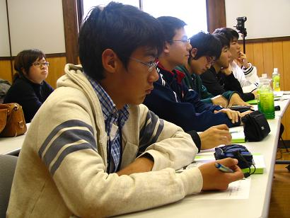
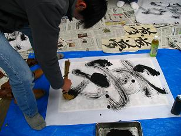

2015ＳｐｒｉｎｇＳｅｍｉｎａｒ
すごい仕事をしているアノ人も
みんな昔は10代だった・・・
３月２８日（土）
安藤雅康さん

|
『現在の歯科医療』
歯学博士
公益社団法人日本口腔インプラント学会指定研修施設
一般社団法人中部インプラントアカデミー 理事長
略歴：
昭和３６年１月１日 愛知県江南市生まれ
昭和５４年３月 滝学園滝高校普通科卒業
昭和６０年３月 岐阜歯科大学歯学部卒業，歯科医師免許取得
平成 １年３月 朝日大学大学院歯学研究科修了，博士号修得
平成 １年４月 福井赤十字病院 口腔外科勤務（副部長）
朝日大学歯学部非常勤講師
平成 ５年６月 医療法人メディカルアート中央歯科クリニック開設（院長）
平成２２年２月 公益社団法人日本インプラント学会指定研修施設
一般法人中部インプラントアカデミー設立（理事長）
資格：
・朝日大学歯学部 非常勤講師
・公益社団法人日本口腔インプラント学会 指導医，専門医
・公益社団法人日本補綴歯科学会 指導医，専門医
著書：
よくわかる口腔インプラント学 医歯薬出版（共著）
メッセージ：
入れ歯を入れたり，虫歯になった歯を削って詰め物をしたり・・これが日常では歯医者さんのイメージと思われます．しかし，歯科医療，医学研究は多岐にわたって前進しています．今回は，歯学部で何を学び，現在の臨床や研究部門では何が行われているかを最新医療機器の実習も含めご紹介します．
|
田阪茂樹さん

|
『ラドン研究とスーパーカミオカンデ実験・温泉観測 』
岐阜大学総合情報メディアセンター 教授
略歴：
・理学博士（名古屋大学）
・東京大学宇宙線研究所研究員
・日本学術振興会奨励研究員
・岐阜大学助教授
「ニュートリノに質量があることの発見」朝日賞
（スーパーカミオカンデ実験）
・岐阜大学教授
第４６次日本南極地域観測隊隊員
メッセージ：
私は岐阜大学で３０年にわたってラドン研究をやってきました。本セミナーはラドンをキーワードにして、その応用研究のスーパーカミオカンデ実験（宇宙線物理学）、温泉観測（地震学）についての講義と実験を行います。
|
【ミニゼミ】
ホルローバトル・
エネルバヤルさん

|
『価値ー価値観』
１９８８年生まれ
２００４年６月 第４８高校卒業（モンゴル国・ウランバートル市）
２００８年３月 モンゴル文化教育大学・ジャーナリスト学部卒業
（モンゴル国・ウランバートル市）
２０１２年３月 星城大学・経営学部卒業
２０１５年３月 名古屋商科大学・マネジメント研究科卒業見込み
|
３月２９日（日）
原田謙介さん

|
『未来を作り担う若者と、社会を良くする動きである政治の関係』
ＮＰＯ法人 ＹｏｕｔｈＣｒｅａｔｅ 代表（２８歳）
略歴：
１９８６年岡山生まれ。愛媛県愛光高校，東京大学法学部卒。
大学３年次に、２０代の投票率向上を目指し「学生団体 ivote」を設立。卒業後の
２０１２年４月インターネット選挙運動解禁を目指し「OneVoiceCampaign」を立ち上げる。２０１２年１１月YouthCreateを設立し、「若者と政治をつなぐ」をコンセプトに活動。地方議員と若者の交流会「VotersBar」の全国展開や、行政・企業とのコラボ企画、選挙時の投票率向上に向けた企画等を実施。内閣府子ども・若者育成支援推進点検・評価会議委員も務めた。
国内・海外問わずサッカーが大好き。自分でも定期的にフットサルを企画。グリーンバード中野チームリーダーとして月に３回中野駅前ゴミ拾いをするなど、拠点のある東京都中野区に関する活動も行っている。
メッセージ：
人口減少・少子高齢化社会に日本は本格的に突入している。社会の授業で人口ピラミッドという言葉を習うけど、ピラミッド型の人口グラフなんて昔の話。新しい日本社会を作っていく原動力はみなさんの動き。政治・社会を巻き込みながら進んでいくきっかけとなる場にできればと思っています。
|
大矢明人さん
|
『テレビ局に入ったら何の仕事したい？～１９種の仕事に携わって～』
テレビ愛知株式会社 取締役 執行役員 編成・業務局長
略歴：
昭和58年 3月 中央大学法学部卒業
昭和58年 4月 テレビ愛知株式会社に開局と同時に入社 総務局総務部
平成 5年 3月 同社 営業局 業務推進部 課長
平成12年10月 同社 三重支社長
平成19年10月 同社 報道制作局 報道部長
平成23年 6月 同社 事業局長
平成25年 6月 同社 執行役員 編成局長
平成26年 6月 同社 取締役 執行役員 編成・業務局長
メッセージ：
「テレビ局に入ったら自分の好きな番組を作りたい」と、多くの人は思いますが、番組制作担当者は一部の社員です。テレビ局開局時から３１年間で、ニュース報道、ドキュメンタリー制作、ドラマ制作、総務、ＣＭ進行、営業、局イメージ広報、世界コスプレサミット、番組編成、放送権利関係など、１９種類の仕事に携わることが出来ました。どの仕事も大切で一つ間違えれば放送事故等ととなり、社会に対して迷惑をかけることになります。人は誰でも希望する仕事に就けるわけではありません。でもその与えられた仕事を上手くこなす術があります。キーワードは「思いやり」。そんな話しを事例を交えながら進めたいと思います。
|
吉田亮さん

|
『地域とともに１４０周年、感謝と信頼を未来につなぐ』
神岡鉱業株式会社代表取締役社長
略歴：
１９７６年 ３月 兵庫県立鳴尾高等学校卒業
１９８０年 ３月 神戸大学法学部卒業
１９８０年 ３月 三井金属株式会社入社
（これまでの勤務地 福岡県大牟田市、埼玉県上尾市、東京都中央区、広島県竹原市、東京都品川区、岐阜県飛騨市）
２００８年 ６月 総務部長
２０１０年 ６月 執行役員総務部長
２０１１年 ６月 執行役員人事部長兼総務部長
２０１２年 ６月 神岡鉱業株式会社代表取締役社長
メッセージ：
当社は今年９月に創業１４０周年を迎えることができました。これも地域の皆様のご理解とご協力のお蔭です。今回のセミナーでは当社の最重要方針である「環境安全最優先」と事業の中心である「リサイクル製錬」について過去を振り返りつつ、「環境」をキーワードに将来像をご紹介いたします。
|
2015春セミナー 講師紹介 （講義順）
会 場： 友雪館、Yu-Meハウス（飛騨市河合町）
参 加 費： 8,000円
集合・解散場所： ＪＲ飛騨古川駅前 ＊ＪＲ飛騨古川駅前よりセミナー会場までバスを運行します＊

春セミナーでは、医療、福祉、芸術、報道、など、各界で活躍中の5名を講師に迎えます。
過去の春セミナーでは、12歳から20歳までの受講生が参加しました。
将来に向けて、夢や希望を広げるきっかけづくりとなる講座です。
セミナー
夢のたまご塾 飛騨アカデミー
リンク
ゆめたま通信
講師紹介
賛助会
組織
写真集
セミナー
ゆめたまホーム
岐阜県飛騨市より世界に発信 「夢のたまご」を育てようよ！
